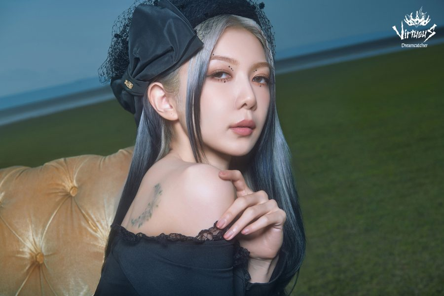

Dami

Lee Yu Bin (이유빈), mais conhecida como Dami, nasceu no dia 07 de Março de 1997, em Seul - Coreia do Sul.
Alguns fatos sobre a Dami:
- Ela é a rapper principal do grupo
- Fã do anime "One Piece"
- Ama ler livros e sempre procura um lugar para ler onde quer que vá
- Foi trainee por 1 ano e meio
- Consegue imitar sons de passarinho
Redes sociais da Dami: Instagram
Voltar